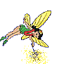

At last! The Real 1,000th T-Shirt Run.
Run #1021, October 24, 2005
Hare: WIPOS
Location: Durfee Management Area, two miles north of Rte 101, although it seemed a lot further.
Weather: High thirties, drizzle with trace of snow, quite dark.
Present: Dry Foot Fairy, Amish It Head, Dr WHO, Tinker, Dik Dok, Basket Boom Boom, G@GH, Oozing SD, Bondo Jovi, Async, Seamus (disabled but game as ever), Ben (collarless and stupid as ever), and virgin visitor Just Sandra.
Missing: Fuwangi Boner, SESYB, Beyond Hope, Just Areola.
The Run:
It was dark, rainy, cold, bloody awful, and Wilma was 500 miles to the south. Makes you cringe at the thought of a direct hit. Well, maybe not – a good hurricane might cause millions of dollars worth of improvements in Woonsocket.
Regardless, a bumper crop of Rhody Hash were there not only for the run, but for the 1,000 run T-shirts, goody bags, and fabulous OnOnOn with punishment of the mismanagement. Unfortunately, there were no mismanagement present, as they had all died when Jake passed away a few weeks ago. It transpires that Dry Foot had decided that this was the 1,000th, but despite spending all of his spare time poring over Rhody Hash records (pathetic), he never discovered the truth.
You see, when Jake took over almost exactly ten years on a similar dismal October night, he was not only erected Grand Master (HMWGMH), but also Hash Cash, Trailmaster, Hash Scribe, Hash Music, and Hash Horn. He promised never, never to let Oozing SD succeed him. He did delegate Hash Horn to Basket (Jake graciously let Bondo be Hash Horn’s Ass), and permitted Dr. WHO and Dry Foot do the odd write-up. Of course, Jake edited the write-ups and deleted all references that demeaned dogs. Especially the time at a beer stop when he tried to bugger Sweet Molasses on the edge of the cliff. (I’m not sure if bugger’s the right word.) Jake did explain that he became overly excited when the hash broke into “Beastiality’s Best”.
Perhaps that’s why Jake reformed, and later created CLAW (Canines and Lower Animals of Woonsocket). As head of CLAW, Jake was vigorous in his pursuit of dog’s rights.
Unfortunately, once again, there were no 1,000 run T-shirts as CLAW had refused to let a caricature of their former leader be paraded in public on a T-shirt. So that was that.
Further unfortunately, a non-male visitor did show up expecting a T-shirt and other goodies, only to express her shock at not seeing Jake, and her dismay at seeing us “Is this a men’s hash? It IS a men’s hash! I think I’ll throw up!”
Dr WHO quickly moved in and skillfully used his bedside manner to assure her that we once had a female run with us, and in addition offered her a 50% discount on her next colonoscopy. The visitor was obviously not about to be seduced until she could see the color of his endoproctorectoscope. WHO’s next stratagem was to indicate Async as a literate, respectable, upper middle class type who never molested women and never complained once about not having a 1,000-run T-shirt. Needless to say, this hadn’t a snowball’s chance of working.
Just then Dick Doc appeared with woman to woman reassurances. Visitor to Dick Doc: “Can you keep me as far as possible from that disgusting person with a condom on his head and smoking a filthy cigar?” (That’s Bondo’s role. He makes all of us look good.) Further to Dick Doc “I’m not sure I want to do this anyway. No 1,000-run T-shirt, and I’ve never run in the dark woods with people like this before.”
WHO somehow sensed that she was a virgin. He then pre-empted the hare’s role and used flour to explain in two seconds the intricacies of trail markings. Brilliant! Casting a confused backwards glance at the drool running down G@GH’s chin, and giving up thoughts of a 1,000 run T-shirt, she screwed up her courage and went for her flashlight.
Tinker got himself in position right behind her, but as luck would have it, his bulb burned out prematurely, and he had to return to the car park for a spare. He never saw the pack again. In a vain attempt to shortcut, never a good idea in the woods at night, he was within earshot of the pack when stopped by a cliff that dropped into a swamp. Fortunately, there appeared to be an open field across a short stretch of swamp. Unfortunately, the open field turned out to be a large bog. Tinker was thinking of the 1,000 run T-shirt he might never get to wear.
Let’s leave Tinker there and catch up with the rest of the pack. Bondo was swearing at Ben. Shamus was swearing at Basket. Oozing was short-cutting, trying to lure the visitor into a trap. Dick Doc was alert to Oozing. Checks were solved by Async, with an assist from G@GH. It looked too easy for Async. WIPOS was sweating inside his Kevlar four-season protective running gear, thinking maybe it wasn’t virgin hashing territory after all. Dry Foot was hoping WHO would do the write up. WHO was hoping Dry Foot would.
Amish was late. So he curled up in the back of his car not caring who (WHO) did what, just patiently waiting for a beer and a clean cotton 1,000th run T-shirt when the pack returned.
And they eventually did return, as they always return. Going through forests like brush hogs, slamming through shiggy, fording raging rivers, sprinting down back roads to a graveyard beer stop, a little well-earned necrophilia ("Rhode Island Cemetary Glocester #69" ..no kidding!), and then the On-In sprint. Wet, cold, full of wheat beer and farting. Hashing doesn’t get much better than this. The only thing better would be to be receiving a multi-colored, high quality cotton 1,000th run T-shirt.
The hash circled up far away from the Woosocket Police, but it was a listless circle once it really sank in that there would be no multi-colored, high quality cotton 1,000th run T-shirt with a pocket on the sleeve. The run got consistent 6.9 ratings as the hare swiveled on his steel-toed running shoes to face each accuser. The hare was invited to sing, but WIPOS forgot the words (to his own song). The visitor was invited in for a drink, and she remembered Battle Hymn of the Republic. Oozing remembered the words too long and easily retained the hashit. It began spitting freezing rain as we swung low, and headed for . . . . Bentley’s!
NOT Cadys! There was some consternation – we didn’t know there were any other bars in the hills of northwest Rhode Island up to our standards. After confusing Glocester with Cranston, the hare got the right directions out and we headed for Bentley’s, not Cadys. The visitor didn’t know where the airport was so she also headed for Bentleys.
Bentley’s turned out to be warm, featured live music almost as good as the Hash a cappella choir, the pizza was well catered by the place next door, the Herpes beer and the I-Pee-A were plentiful, Basket’s harmonica fell apart when he was invited to jam, and WIPOS tried for (but missed) the all-time high OnOnOn cost record. With Hoover missing, very few foreign objects got into the beers. It would have been absolutely perfect with a multi-colored, high quality cotton 1,000th run T-shirt with a pocket on one sleeve and your name on the other.
NB: Posted on the web site Tuesday: “What an awesome hash for this virgin until 10/24/05 in rhode island. It was worth it and I want more. love s” “More” obviously meaning the multi-colored, high quality cotton 1,000th run T-shirt with a pocket on one sleeve and your name on the other. Definitely half a brain and total lack of taste. Just Sandra just could be a just perfect Rhody hasher.
OOT
